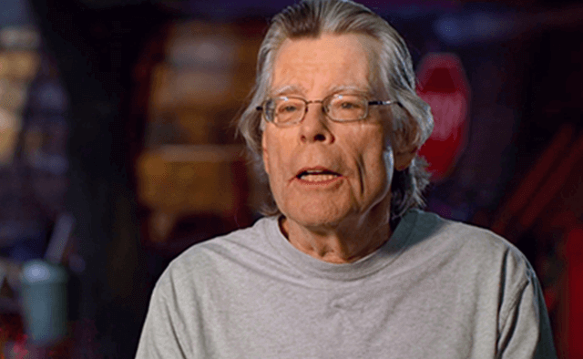

スティーヴン・キング
『ミスト』（原題：The Mist）は、スティーヴン・キングの1980年の中編小説『霧』を原作とした、2007年にアメリカで公開されたSFホラー映画である。
スティーヴン・キングは、アメリカのモダンホラー小説家。代表作に「スタンド・バイ・ミー」、「ショーシャンクの空に」、「グリーンマイル」、「IT」などがある。これまで60冊以上の小説を上梓し、そのすべてが世界的ベストセラーになっている作家。近作に、「The Institute」「Elevation」「The Outsider」、息子のオーウェン・キングと共著の「Sleeping Beauties」、「ビル・ホッジス」３部作：2015年度エドガー賞最優秀長編賞を受賞した「ミスター・メルセデス」、「ファインダーズ・キーパーズ」、「任務の終わり」、「心霊電流」、「シャイニング」の続編「ドクター・スリープ」（いずれも文藝春秋刊）などがある。また、「11/22/63」（文藝春秋刊）は、「ニューヨーク・タイムズ」紙の2011年の年間ベストセラー・トップ10入りを果たし、ロサンゼルス・タイムズ文学賞（ミステリー部門）と国際スリラー作家協会最優秀長編賞を受賞した。これまでに、03年度全米図書賞特別功労賞を受賞し、14年に米国民芸術勲章を受章。さらに、18年度PENアメリカン・センター・リテラリー・サービス・アワードを受賞した。メイン州バンガーに、妻で小説家のタビサ・キングとともに在住。

『スタンド・バイ・ミー』（原題: Stand by Me）は、1986年公開のアメリカ映画。
作家のゴーディは、『弁護士クリストファー・チェンパーズ刺殺』という新聞の記事が目に止まり、少年だったあの頃を思い出す。
ゴーディは12歳だった頃、オレゴン州のとある田舎町で育てられた。ゴーディの地元は治安も悪く、家庭環境にも何かしらの問題を抱えた家族が多い町だった。その中で、ゴーディ・クリス・テディ・バーンの4人は性格、家庭も個性も違うがなぜかウマが合い、一緒に遊んだりしていた。そんなある日、バーンは不良グループの一員である兄たちの会話を盗み聞きする。会話によると、3日前から行方不明になってるブラワーという少年が、列車に刎ねられて死体になっているらしい。バーンはそのことを3人に話すと、死体を見つければ有名になれると思い、4人でひと夏の旅へと向かう。
×
『ショーシャンクの空に』（原題：The ShawshankRedemption）は、1994年公開のアメリカ映画。
アンディ・デュフレーンは妻とその不倫相手を殺した容疑をかけられ、逮捕される。アンディは無実を主張したものの、終身刑の判決を受け、ショーシャンク刑務所に収監されることになる。この大規模な刑務所ではノートン所長が絶対的な権力を振るい、囚人たちを支配していた。ショーシャンク刑務所では、服役囚に対する刑務官の暴力や、囚人同士のけんかや暴行が日常茶飯事だった。刑務所内には日用品やタバコ、果ては映画女優のポスターに至るまで外部から調達してくる"調達屋"レッドがいた。アンディと同じ終身刑を宣告されたレッドは二十年以上もこのショーシャンクで服役していたが、仮釈放の見込みが一向に立つ気配はなかった。レッドと知り合ったアンディは少しずつ、刑務所の生活になじんでいく。やがて、銀行の副頭取だったアンディは刑務所長の会計係を務めるようになるのだった。
人を罰するとはどういうことなのか。""犯罪者""であるがゆえに、闇に消える問題がそこにはある。無実の罪で収監されたアンディー、そして殺人罪で服役するレッドの運命を通して、刑事司法制度の抱える問題点に鋭く切り込む。
×
『グリーンマイル』（原題：The Green Mile）は、1999年公開のアメリカ映画。
20世紀末、60年前の出来事を刑務所の看守主任だったポールが回想する形で物語が始まる。
1932年、アメリカの刑務所。死刑囚監房で看守を務めるポールのもとに、一人の大男が送られて来る。双子の少女を強姦殺人した罪を持つ死刑囚ジョン・コーフィは、その風貌や罪状に似合わないほど弱く、繊細で純粋な心を持っていた。これと同時期に、知事の妻の甥であるパーシーが看守となり、傲慢な態度で他の看守たちから嫌われる存在になる。ある時、コーフィは局部を掴んだだけでポールの重い尿路感染症を治してしまう。彼はその後も、パーシーに踏みつけられ瀕死の重傷を負わされたネズミ(囚人デルがMr.ジングルスの愛称で飼っていたネズミ)の命を救い、これを見た看守たちは、彼はその不思議な力を神から授かった特別な存在なのではと考え始める。同時にポールは悩む。コーフィが電気椅子に送られること、それを行う自分たちは大きな過ちを犯しているのではないかと。
×
『IT/イット “それ”が見えたら、終わり。』（原題：IT:chapter one）は、2017年公開のアメリカ映画。
1988年10月のある雨の日。アメリカ・メイン州の小さな町、デリーで悲劇が起こる。風邪を引いて寝込んでいた13才の少年ビルは、7才の弟ジョージーのために紙のボートを作ってやる。大喜びしたジョージーは黄色いレインコートを着込み、ボートを持って雨の中、外へと飛び出して行く。ジョージーが水たまりの上に浮かべたボートは、雨風の勢いを受けて滑るように進んで行く。一生懸命に後を追うジョージーだったが、ボートは道路の排水溝の中に落ち、一瞬で見えなくなった。慌てたジョージーが排水溝を覗き込むと、暗闇の中に浮かび上がったのは二つの目玉。まるでピエロのような姿をした不気味な”なにか”だった。ピエロは“ペニーワイズ”と名乗り、「ボートを返してほしければ手をお出し」と言う。その言葉に従い、ジョージーが手を伸ばした途端、恐ろしい形相に変貌したペニーワイズがジョージーの腕を食いちぎる。悲鳴を上げたジョージーはそのまま排水溝の中へと引きずり込まれ、たちまち姿を消した。降りしきる雨の中、残ったのは赤い血に染まった道路だけだった。
×
『IT/イット THE END “それ”が見えたら、終わり。』（原題：IT:chapter two）は、2019年公開のアメリカ映画。
前作、『IT/イット “それ”が見えたら、終わり。』の続編にして完結作。
連続児童失踪事件が多発し、その事件の犯人が”それ”と呼ばれる殺人ピエロ、“ペニーワイズ”であることを突き止め、苦戦しながらも撃退した主人公ビルとビルの仲間達である”ルーザーズ・クラブ”のメンバーは、「再び“それ”が現れたら僕たちも戻る」と誓い日々を過ごし、それぞれ別々の職に就きながら順風満帆な人生を送っていた。
しかしその事件から27年が経ったある日、”ルーザーズ・クラブ”のメンバーの1人が自殺を図り、その壁には大きく「IT(それ＝ペニーワイズ)」と書かれていた。「再び“それ”が現れたら戻る」と誓った27年前の約束を守るため、彼らは田舎町デリーに戻り事件の真相を追うことに。
×
『ドクター・スリープ』（原題：Doctor Sleep）は、2019年公開のアメリカ映画。
前作である（『シャイニング』（原題：The Shining）、1980年に制作されたホラー映画。）の続編である。
40年前の惨劇を生き延びたダニーは、心に傷を抱えた孤独な大人になっていた。父親に殺されかけたトラウマ、終わらない幼い日の悪夢。そんな彼のまわりで起こる児童連続失踪事件。
ある日、ダニーのもとに謎の少女アブラからメッセージが送られてくる。彼女は「特別な力（シャイニング）」を持っており、事件の現場を”目撃”していたのだ。事件を追う二人。やがて二人は、ダニーにとって運米の場所、あの”呪われたホテル”にたどりつく。
呪われたホテルの扉が開くとき、すべての謎が明かされる—————
×